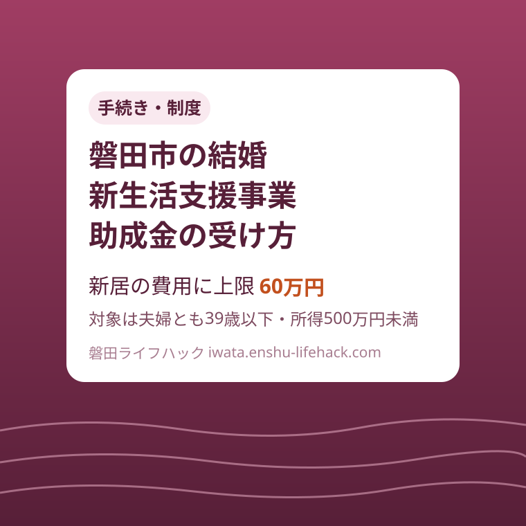

手続き・制度
磐田市の結婚新生活支援事業助成金｜夫婦とも39歳以下・所得500万円未満の新婚世帯へ最大60万円

この記事の要点
Q. 磐田市の結婚新生活支援事業は、いくら・誰がもらえるの？
A. 令和8年1月1日以降に結婚した、夫婦とも39歳以下・所得合計500万円未満の新婚世帯が対象で、上限は60万円（高い方が30歳以上39歳以下なら30万円）です。新居の取得・賃貸・リフォーム・引越の費用に使え、申請は令和9年2月末まで（先着順）。令和8年度からは講座の受講が必須になりました。
導入——結婚の費用は戻ってこない、が磐田市では一部違う
結婚が決まると、住まいの初期費用が一気に重なります。賃貸なら敷金・礼金・仲介手数料に引越代、購入なら頭金や諸費用、実家を直して住むならリフォーム代です。磐田市には、この新生活の立ち上げ費用を補助する「結婚新生活支援事業助成金」があります。
この記事は、磐田市の結婚新生活支援事業助成金について、「誰が対象で、いくらまで、何の費用に使えて、いつまでに何をすればいいか」を順番に整理した案内です。金額は最大60万円と目立ちますが、実務でつまずくのは、年齢と所得の線引き、対象になる支払いの期間、そして令和8年度から必須になった講座の受講です。
根拠にするのは、磐田市公式ページ「新婚生活をスタートする世帯を応援します（結婚新生活支援事業助成金）」（ページ番号1010696、2026年8月26日更新）です。あわせて、静岡県公式ページ「結婚・妊娠・共育ての相談機会提供・支援プログラム（結婚新生活支援事業）」で、県内28市町共通の枠組みも確認しました。
先に結論を書きます。対象は、令和8年1月1日以降に婚姻の届出が受理され、夫婦とも婚姻日に39歳以下で、前年（または前々年）の所得の合計が500万円未満の新婚世帯です。補助上限は、夫婦のうち高い方の年齢が29歳以下なら60万円、30歳以上39歳以下なら30万円です。申請期間は令和8年6月15日から令和9年2月末日までで、先着順のため予算の状況で年度途中に終了することがあります。
そして、この制度には「結婚しただけでは申請できない」という段取りがあります。対象の費用は令和8年4月1日から申請日までに支払ったものに限られ、申請の前に夫婦そろって講座の受講等を済ませ、受講証明書を用意する必要があります。費用の領収書や契約書を捨てずに残し、講座を先に受けておくことが、この制度でいちばん実務的な注意点です。
まず、公式資料から対象の要件を整理する
市の説明では、対象は令和8年1月1日以降に婚姻の届を提出し、受理された夫婦で、要件をすべて満たす世帯です。最初の関門は所得です。夫婦の前年（又は前々年）の所得の合計額が500万円未満であること。同年中に奨学金の返済がある場合は、その返済額を控除した額で判定します。奨学金を返しながら働く若い世帯に配慮した計算です。
二つ目は年齢です。婚姻日における夫婦の年齢が、ともに39歳以下であることが必要です。一人でも40歳以上だと対象から外れます。上限額を決める年齢の判定にも同じ「婚姻日」が基準で、申請日の年齢ではない点に注意してください。
三つ目は住まいと契約の要件です。申請時点で、夫婦の住民票の住所が申請する住宅の住所にあること。住宅の契約名義人が、夫か妻、または夫婦の共同名義であること（やむを得ない事情を除く）。そして、助成金の交付決定日から1年以上、その住宅に定住する意思があることです。住民票を移す前に申請する、という順番は認められません。
四つ目は、重複と滞納の確認です。他の公的制度による家賃補助等を受けていないこと。申請時に市税等を滞納していないこと。夫婦のどちらも、過去にこの助成金や同種の助成を受けていないこと。市の様式でも、これらを誓約する形で確認されます。
市は「対象世帯フローチャート」をページに載せていて、婚姻日・年齢・所得の順に自分が当てはまるかを判定できるようにしています。要件は数が多いので、本文の箇条書きとフローチャートを行き来しながら確認するのが確実です。

所得の判定に使う証明書は、申請する月で年度が切り替わります。申請月が4月から6月なら令和7年度の所得課税証明書（令和6年中の所得）、7月から翌3月なら令和8年度の所得課税証明書（令和7年中の所得）です。なお、判定基準時点で磐田市に住所があった方は、証明書の提出が不要とされています。転入してきたばかりの世帯ほど、証明書の用意が必要になるわけです。
補助額と対象経費——上限は年齢で決まり、支払いの期間が決まっている
補助額は、住宅取得費用、リフォーム費用、住宅賃貸借費用、引越費用を合算した額で、1,000円未満の端数は切り捨てです。勤務先から住宅手当等の支給を受けている場合は、その支給額を控除します。家賃の一部を会社が負担してくれている世帯は、その分が差し引かれる計算です。
上限額は二段構えです。婚姻日に、夫婦いずれかの高い方の年齢が29歳以下なら60万円、30歳以上39歳以下なら30万円です。「夫婦とも29歳以下」ではなく「高い方が29歳以下」なので、たとえば28歳と29歳の夫婦は60万円の区分、29歳と31歳の夫婦は30万円の区分になります。
対象になる費用の範囲を確認します。住宅取得費用は、婚姻を機に磐田市内に新たに購入または新築する際に要した費用です。磐田市内の住宅であることが条件なので、市外に新居を構える場合は対象になりません。
住宅賃貸費用は、賃料、敷金、礼金、共益費、仲介手数料が対象です。引越費用は、引越業者または運送業者に支払った費用に限られ、自分でレンタカーを借りて運んだ費用は含まれません。リフォーム費用は、住宅の機能の維持・向上のための修繕、増築、改築、設備更新等の工事費用で、倉庫・車庫の工事、門・フェンス・植栽などの外構、エアコンや洗濯機などの家電の購入・設置は対象外と明記されています。
いちばん見落としやすいのが、支払いの期間です。対象になるのは、令和8年4月1日から申請日までに支払った費用だけです。令和8年1月に結婚して、2月に新居の契約金を払った場合、その支払いは期間の外にあります。結婚の時期と申請の時期の組み合わせで、同じ費用でも対象になったりならなかったりするので、支払日は領収書で必ず確認してください。

令和8年度からの変更点——講座の受講が必須になった
令和8年度の制度で、前年度と大きく違うのが講座の要件です。申請時に、市の挙げる取組のうちいずれかを、夫婦ともに受講または実施していることが条件になりました。県の案内でも、令和8年度から県内全域で必須の支給要件になったと説明されています。
選択肢は四つあります。ライフデザイン支援講座「～未来を準備～かしこいパパ・ママの人生劇場」、プレコンセプションケアに関する講座、共家事・共育て講座「ドラマから読み解く育休と家事シェア」、そして医療機関への妊娠・出産に関する相談です。動画の講座は7分から1時間程度のものが用意されています。
受講後の手続きにも違いがあります。プレコンセプションケアの講座以外を受講した場合は、受講後にアンケートへ回答して証明書を受領します。プレコンセプションケアの講座を受講した場合は、受講証明書に記入して提出します。どの講座を選んでも、証明する書類が申請書類一式に含まれるので、受講だけで終わらせず、証明書まで手元に用意するところまでが一つの作業です。
講座は、申請直前に慌てて受けることも可能ではありますが、証明書の発行やアンケートの回答に手間取る可能性を考えると、結婚や転居の手続きと並行して早めに済ませておくのが安全です。特に先着順の制度では、書類の不備で数週間遅れることが、そのまま受付終了のリスクになります。
申請の方法——電話予約をして、窓口へ書類を持っていく
申請は郵送ではできません。まず、こども未来課（電話0538-37-2808）へ電話して、来庁の希望日時を予約します。混雑時の待ち時間を改善するための事前電話予約で、窓口対応が重なった場合は予約した人が優先されます。提出先はiプラザ（総合健康福祉会館）3階のこども未来課です。
全員が必要な書類は、交付申請書兼実績報告書（様式第1号）、婚姻届受理証明書または婚姻後の戸籍謄本、夫及び妻の所得課税証明書（基準時点で磐田市に住所があった方は不要）、講座等の受講を証明する書類（受講証明書）、夫及び妻の住宅手当等支給証明書（様式第2号）です。住宅手当の支給がない場合も、「支給なし」の証明が必要だと明記されています。勤務先に発行してもらう書類なので、依頼は早めにしておきます。
費用の種類ごとに、契約と支払いの証明が追加されます。住宅取得なら売買契約書の写しと、支払者の氏名・金額・支払い内容・支払日・支払い先が明記された支払確認書類の写し。リフォームならリフォーム契約書の写しと支払確認書類。賃貸なら賃貸借契約書の写しと支払確認書類。引越なら支払確認書類です。領収書や振込記録は、五つの項目が読み取れる形で残しておく必要があります。
奨学金の返済を所得から控除したい場合は、返済額が分かる書類も用意します。所得課税証明書と同期間の返済分が対象で、合計所得が500万円未満の世帯は提出不要です。500万円の前後で判定が分かれる世帯にとっては、この控除が申請の可否を決めることがあります。
申請後の流れは四段階です。交付申請をして書類を提出すると、市が書類を確認し、交付決定通知書が郵送されます。通知に同封される請求書に記入して提出すると、指定した口座へ助成金が振り込まれます。申請して終わりではなく、請求の手続きがもう一段あることを、スケジュールに入れておいてください。
前年度に上限まで届かなかった世帯への継続申請
令和7年度にこの制度を利用し、補助上限額に達しなかった世帯には、継続の道があります。申請できるのは、令和7年度の補助上限額から受給済みの額を差し引いた残りです。市の例では、上限60万円で40万円を受給した世帯は、令和8年度に20万円まで申請できます。
ただし、継続で対象になる経費は絞られています。令和7年度に申請した住宅と同一の住宅にかかる住居費（賃料と共益費）のみで、前年度と同じ費目だけが対象です。新しい引越費用やリフォーム費用は、継続の対象にはなりません。
申請期限は令和9年2月末日までで、新規と同じく先着順です。書類は、様式第1号の申請書兼実績報告書、住宅手当等支給証明書、令和8年4月1日から申請日までに支払った賃料等の領収書または支払確認書類の写しで、賃貸借契約書の写しは前年度の提出分から変更がある場合のみ求められます。昨年度に賃貸で受給した世帯は、今年度の家賃分をまとめて申請する形です。
なお市は、国の予算の状況により、令和9年度の継続申請がなくなる場合があるとしています。継続を当てにして支払いを先延ばしにするより、対象になる年度のうちに申請するのが前提です。
磐田の暮らしに置き換える——結婚・転入・住まい選びが重なる時期
この助成金が効くのは、結婚と住まい探しと転居が同じ数か月に重なる時期です。磐田市内で賃貸を探す世帯なら、敷金・礼金・仲介手数料・初月の賃料と引越代を合計すると、一般的な物件でも数十万円規模になります。上限30万円の区分でも初期費用のかなりの部分をまかなえ、60万円の区分なら購入やリフォームの足しにもなります。
転入する世帯は、順番に注意してください。要件として、申請時点で夫婦の住民票が新居の住所にあることが必要です。転入届を出して住民票を移し、契約書と支払いの書類を揃え、講座を受けてから申請する、という流れになります。所得課税証明書も、転入組は用意が必要になる場合があるため、前の自治体で取得しておくと二度手間がありません。
実家をリフォームして同居・近居する世帯は、リフォームの対象範囲を先に確認してください。住宅本体の修繕や設備更新は対象でも、外構や家電は対象外です。見積りの段階で、対象になる工事と、ならない工事を分けて書いてもらうと、申請額の計算と支払確認書類の用意がずっと楽になります。
評価——良い点と、注文したい点
良い点は、対象の判定材料が公式ページに具体的にそろっていることです。年齢は婚姻日基準、所得は500万円未満で奨学金返済の控除あり、上限は年齢の高い方で判定、と線引きが文章で明示され、フローチャートまで用意されています。自分の世帯が当てはまるかを、窓口に行く前にかなりの精度で判定できます。
良い点はもう一つ、支払いの対象期間（令和8年4月1日から申請日まで）と、先着順で年度途中に終了することがある旨が、はっきり書かれていることです。締切と予算の限りが明示されているからこそ、逆算して準備を進められます。住宅手当の「支給なしでも証明が必要」という落とし穴まで書かれている点も、実務的です。
注文したい点は、講座の受講証明の扱いが講座ごとに異なり、少し分かりにくいことです。アンケート回答で証明書を受領する講座と、自分で受講証明書に記入して提出する講座があり、どちらの手順かを行き来して確認する必要があります。講座の一覧表に「証明の方法」の欄が一列あるだけで、迷いはかなり減るはずです。
注文したい点はもう一つ、申請書類のうち所得課税証明書が「申請月によって年度が切り替わる」ことです。7月を境に必要な証明書が変わり、転入の有無でも要否が変わります。条件分岐が多い書類ほど、自分のケースを一つ選ぶだけで必要書類が一覧になる案内があると、窓口での差し戻しは減ると思います。
対案・結論——結婚が決まったら「領収書・講座・予約」の順で動く
対案・結論として、この制度の使い方は三つの順番に集約されます。第一に、婚姻日・年齢・所得の三つで対象かどうかを先に判定する。第二に、対象期間内の支払いの領収書と契約書を捨てずに集め、講座を受けて証明書を用意する。第三に、令和9年2月末日の期限を待たず、電話予約をして窓口へ申請する。先着順の制度では、この順番そのものが受給の条件です。
金額の受け止め方も整理しておきます。上限60万円は「結婚すれば60万円もらえる」という意味ではなく、実際にかかった対象費用の合計（住宅手当は控除）が上限まで補助される、という意味です。費用が25万円なら、区分が60万円でも支給は25万円（端数切り捨て）です。家計の計画は、実際にかかる費用を積み上げて立てるのが正解です。
前年度に受給した世帯は、継続申請で家賃と共益費の残り枠を使えます。新規の世帯は、来年度の継続があるとは限らない前提で、今年度の申請期間内に手続きを終える計画にしてください。
確認する順番
- 婚姻日（令和8年1月1日以降）・夫婦とも39歳以下・所得合計500万円未満（奨学金返済額は控除）の三条件と、市のフローチャートで対象を確認する
- 講座等（ライフデザイン支援講座・プレコンセプションケア・共家事共育て講座・医療機関への相談）のいずれかを夫婦ともに受講し、受講証明書を用意する
- 令和8年4月1日以降に支払った対象費用（住宅取得・賃貸・リフォーム・引越）の契約書と支払確認書類、領収書を集める。住宅手当等支給証明書は支給なしでも勤務先に発行してもらう
- こども未来課（0538-37-2808）へ電話予約し、iプラザ3階の窓口へ書類を提出する（郵送不可）。申請期間は令和9年2月末日まで・先着順
- 交付決定通知が届いたら、同封の請求書を提出して振り込みを受ける
夫婦で共有するための記録
申請書類は、夫婦のどちらか一方の勤務先や実家に散らばりやすい書類の集まりです。所得課税証明書、住宅手当の証明、契約書、領収書を、一つのフォルダに「結婚新生活支援事業」としてまとめておくことをおすすめします。様式第2号の証明は勤務先への依頼が必要なので、締切直前ではなく、結婚の手続きと並行して頼んでおくと安心です。
支払いの記録は、支払日が令和8年4月1日から申請日までの期間内かどうかが判定材料になります。領収書には支払日が読み取れるものを残し、振り込みで払った費用は、通帳や明細の該当部分を一緒に保管します。賃料のように毎月払う費用は、月ごとに並べておくと、申請額の積み上げがそのままできます。
講座の受講証明書は、受領した時点でフォルダへ入れます。アンケート回答後に発行される証明は、画面の控えだけでは提出書類にならない場合があるため、受領した証明の形で保管してください。
大石の視点
大石の視点として、この制度の肝は金額よりも「タイミングの設計」だと感じます。対象期間が年度で区切られ、支払いが期間外だと対象にならず、先着順で予算が尽きれば年度途中でも終わる。結婚という、人生で最も忙しい時期の手続きだからこそ、知っているかどうかで数十万円が変わります。婚姻届を出す前後の一週間に、この制度の存在へ案内が届くかどうかが実質を決めます。
不動産の現場で若い世帯の住まい探しに関わると、初期費用の見通しが、物件の選択肢そのものを左右する場面をよく見ます。賃貸の初期費用やリフォーム費用に上限30万円から60万円の補助が見込めるなら、選べる物件や工事の範囲は実際に広がります。住まい選びの早い段階でこの制度を前提に置けるよう、市の案内と現場の案内がつながることが大切だと思います。
まとめ
磐田市の結婚新生活支援事業助成金は、令和8年1月1日以降に結婚した、夫婦とも39歳以下・所得合計500万円未満の新婚世帯を対象に、新居の取得・賃貸・リフォーム・引越の費用を、上限60万円（高い方が30歳以上なら30万円）まで補助する制度です。令和8年度からは講座の受講が必須になり、申請は令和9年2月末日まで・先着順です。対象の判定、領収書の保管、講座の受講、電話予約と窓口申請という順番を早めに進めることが、この制度を確実に使う近道です。
- 対象は令和8年1月1日以降に婚姻し、夫婦とも婚姻日に39歳以下、所得合計500万円未満（奨学金返済額は控除）の新婚世帯
- 上限は高い方の年齢が29歳以下で60万円、30歳以上39歳以下で30万円。対象は令和8年4月1日から申請日までに支払った住宅取得・賃貸・リフォーム・引越の費用で、住宅手当分は控除
- 令和8年度から、講座等の受講（夫婦とも）と受講証明書が必須。リフォームは外構・家電が対象外、引越は業者への支払いに限る
- 申請期間は令和9年2月末日まで・先着順。こども未来課（0538-37-2808）へ電話予約のうえ、iプラザ3階の窓口へ提出（郵送不可）